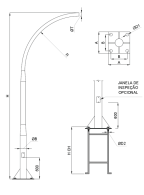

Confeccionado em tubo redondo de anço carbono SAE 1010/1020, em alturas variadas de 2 metros a 15 metros.
Galvanizado a fogo por imersão conforme norma NBR-6323 da ABNT, garantindo longa vida útil ao mobiliário. Fixação flangeada (base e chumbador), chumbador fornecido nas dimensões adequadas a altura do poste conforme tabela anexa. Aplicação em diversos áreas como: Praças, estacionamentos, vias públicas, condomínios entre outros.
| Referência | ||||||||
|---|---|---|---|---|---|---|---|---|
| Poste | Flange | Chumbador | ||||||
| H (Últil) | Ø B | Ø T | A | B | Ø D1 | Ø D2 | H CH | |
| MLP-CSF-2000 | 2000 | 76,20 | 60,30 | 200 | 140 | 14 | 3/8" | 350 |
| MLP-CSF-3000 | 3000 | 76,20 | 60,30 | 200 | 140 | 14 | 3/8" | 350 |
| MLP-CSF-4000 | 4000 | 76,20 | 60,30 | 200 | 140 | 14 | 3/8" | 350 |
| MLP-CSF-5000 | 5000 | 76,20 | 60,30 | 250 | 180 | 20 | 5/8" | 600 |
| MLP-CSF-6000 | 6000 | 76,20 | 60,30 | 250 | 180 | 20 | 5/8" | 600 |
| MLP-CSF-7000 | 7000 | 88,90 | 60,30 | 300 | 220 | 25 | 3/4" | 800 |
| MLP-CSF-8000 | 8000 | 88,90 | 60,30 | 300 | 220 | 25 | 3/4" | 800 |
| MLP-CSF-9000 | 9000 | 88,90 | 60,30 | 300 | 220 | 25 | 3/4" | 800 |
| MLP-CSF-10000 | 10000 | 114,30 | 60,30 | 300 | 220 | 25 | 3/4" | 800 |
| MLP-CSF-11000 | 11000 | 114,30 | 60,30 | 300 | 220 | 25 | 3/4" | 800 |
| MLP-CSF-12000 | 12000 | 114,30 | 60,30 | 300 | 220 | 25 | 3/4" | 800 |
| MLP-CSF-13000 | 13000 | 127,00 | 60,30 | 300 | 220 | 25 | 3/4" | 800 |
| MLP-CSF-14000 | 14000 | 127,00 | 60,30 | 400 | 300 | 30 | 7/8" | 1000 |
| MLP-CSF-15000 | 15000 | 127,00 | 60,30 | 400 | 300 | 30 | 7/8" | 1000 |
